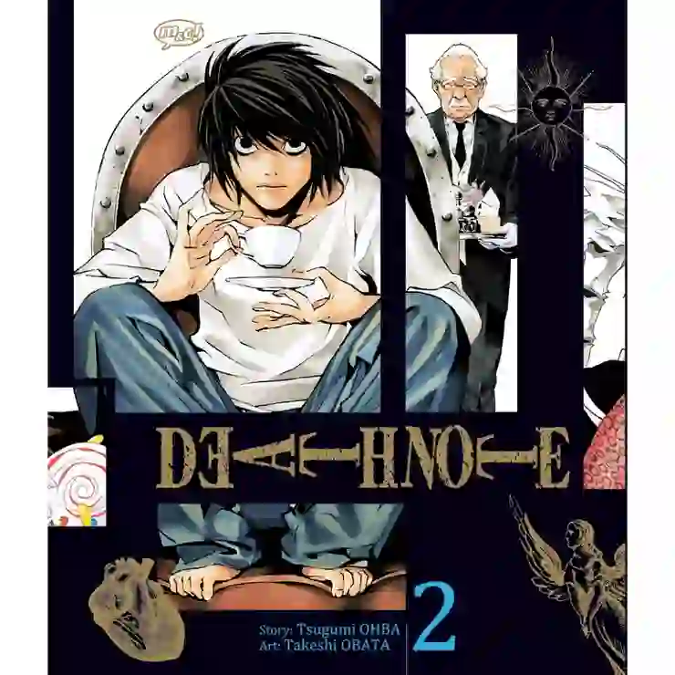
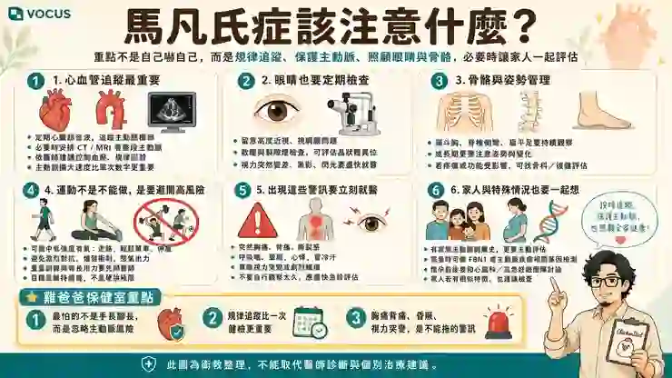

從公司健檢、漏斗胸、脊椎側彎，到L的長手指還有路克的胸廓...陪了雞爸爸四十幾年的身體特徵，某一天竟然突然全部串在一起
這陣子，公司正好要安排年度健康檢查，雞爸爸一次拿到了好幾家健檢中心的方案。
這一家有心臟超音波，那一家有頸動脈超音波，另外一家又多了冠狀動脈鈣化指數；有的主打心血管，有的多了肝纖維化，還有一堆看起來每一項都很厲害、卻又不知道自己到底需不需要的檢查。
雞爸爸研究了半天：每一家好像都很好，但雞爸爸完全不知道哪一家比較適合自己。
於是很自然地，把幾份健檢方案全部丟給小妾，「妳幫我比較一下，到底哪一套比較適合雞爸爸？」本來以為這只是一題12K~15K之間的選擇題。
沒想到，小妾要幫雞爸爸選方案，不是看哪一家的檢查項目最多，而是先把雞爸爸這個人攤開來看。剛好之前研究了一下心血管和動脈硬化的文章，所以小妾對於雞爸爸的身體還算了解，說要把做過哪些檢查、平常運動狀況、最近最在意的健康問題，都放進去評估。
於是雞爸爸也很認真地，把自己四十幾年累積下來的身體資料，一樣一樣搬到桌上。聊著聊著，雞爸爸自己提到：「我本來就有一點脊椎側彎，還有輕微漏斗胸。」
再往下聊到家族病史時，又提起：家族裡曾經有人發生主動脈剝離。
這時漏斗胸、脊椎側彎、家族主動脈剝離，原本只是散落在不同段落裡的三件事情。
結果小妾把它們放在一起之後，突然問雞爸爸一句：「你以前有沒有評估過馬凡氏症？」雞爸爸盯著螢幕：「馬什麼...凡什麼...？」小妾說：Marfan syndrome馬凡氏症候群。
等...等等...我們剛剛不是在挑公司健檢嗎？我只說我有漏斗胸啊？

說到漏斗胸，這個故事其實得往前倒帶
漏斗胸並不是這次和小妾聊天，雞爸爸才突然覺得自己的胸口怪怪的。這件事情，雞爸爸早就看過醫師了。只是它的起點一點都不像疾病，純粹只是因為—胸肌怎麼這麼難練？
之前有一陣子雞爸爸比較認真健身，伏地挺身、啞鈴推胸，胸肌也不是完全沒有長，但每次站在鏡子前面，總覺得自己的胸型跟別人不太一樣，尤其胸口中央。明明有肌肉，卻好像怎麼練都少了一點別人那種飽滿的感覺。
雞爸爸原本簡單以為：大概就是胸肌還不夠大。
直到有一天滑短影音，看到一位健身老師提到，有些人的胸型不好看，不一定只是「練得不夠」，如果本身有肋骨外翻、胸廓結構差異，甚至漏斗胸，也可能影響胸肌最後呈現出來的形狀。
雞爸爸滑到這裡，手指突然停下來。漏斗胸？
這是雞爸爸第一次認真知道，原來胸口凹進去這件事情，真的有一個專有名詞。馬上手機一放，跑去照鏡子。正面看看、側面看看、摸一摸，再吸一口氣看看。
「……欸？」好像真的有。而且不只是胸口中央稍微凹進去，肋骨下緣也有一點往外翻。照雞爸爸的個性，當然不會看完一支短影音，就直接宣布自己確診什麼疾病。
於是真的特地掛了市立聯合醫院看漏斗胸權威的醫師。
到漏斗胸門診 才發現雞爸爸的胸口其實小蛋糕
真的走進門診之後，雞爸爸才第一次知道，嚴重的漏斗胸原來可以到什麼程度。有些人的胸骨凹陷非常明顯、有些甚至已經嚴重到需要接受手術，要開刀在身體裡放入特殊的矯正裝置，從內側把凹陷的胸骨撐起來。
雞爸爸看看別人、再低頭看看自己，突然有種：「不好意思，我這個是不是有點小題大作？」的感覺。不過既然都來了，還是乖乖給醫師檢查。
醫師實際評估之後，雞爸爸有輕微的漏斗胸，但因為胸口厚度夠，不需要手術處理。
那次也順便問了鼠姊姊，結果醫師檢查後，鼠姊姊的胸廓特徵比雞爸爸稍微再明顯一點。於是，「漏斗胸」這三個字，就這樣被雞爸爸收進自己的身體資料夾。
知道有，目前不用開刀，鼠姊姊可能可以追蹤一下，大概就這樣。
甚至還有一點釋懷：原來胸肌的形狀，不完全都是雞爸爸偷懶造成的。
至於什麼馬凡氏症、主動脈、結締組織…那時候根本連想都沒有想過。
原來很多事情，一直都只是分開放著
後來開始去整復，雞爸爸又慢慢知道自己的身體還有一些其他特色。
原本就有一點脊椎側彎，胸廓、肋骨、頸部和骨盆，也有一些結構與張力上的問題。整復師甚至第一次見面就曾經提過，雞爸爸硬腦膜一帶的張力比較緊。
可是那時候根本不會覺得這些事情彼此有什麼關係，漏斗胸是漏斗胸、脊椎側彎是脊椎側彎、也根本不會覺得和整復師說的身體張力有關。
人體本來就不是工廠拿同一副模具壓出來的，每個人多少都有一點自己的歪法。所以這些事情，就一直各自躺在不同的資料夾裡。直到這次—雞爸爸只是想選一套公司健檢...
健檢還沒挑完，先多了一個「馬凡氏症」
小妾那一句「你有沒有評估過馬凡氏症？」之後，雞爸爸當然開始查，結果愈看，表情愈不對。除了漏斗胸和脊椎側彎，Marfan 的全身性評估裡，居然還會注意：臂展、上下半身比例、手腕徵、拇指徵。
雞爸爸看到這裡，下意識把自己的兩隻手伸了出來，等等。這些東西怎麼愈看愈熟？雞爸爸從小其實一直滿自豪自己的手很長。明明身高不高，但從小打籃球防守的時候，兩隻手張開，臂展就是特別長。以前只覺得：抄截、打火鍋、防守，甚至是搶籃板時都不錯用。
再看看上半身和腿的比例，好像也確實跟有些人不太一樣。還有那雙手，兔阿嬤從小說藝術家的手指就是很纖細，而且很長，從小都不覺得是什麼問題，反而覺得滿好看的。甚至用手指去環另一隻手腕，以前也只覺得是：「你看，我的手真的很長。」
結果活到四十幾歲才知道，原來醫師真的會把一些身體比例、胸廓、脊椎，以及特定的手腕徵、拇指徵放進評估裡。當然，自己手指繞得過手腕，不代表正式檢查就一定陽性。
可是那個瞬間仍然很奇妙，因為以前散落在四十幾年人生裡，完全互不相干的東西：
漏斗胸、脊椎側彎、超長臂展、身體比例、纖細又長的手指，加上家族主動脈剝離病史...
第一次被擺到了同一張桌子上。
原本雞爸爸只是想問：「公司健檢到底選哪一家？」
結果健檢還沒有選完，雞爸爸先多了一件完全沒有排進今年行程的事：
確認自己到底需不需要進一步排除馬凡氏症。
就在這時候，雞爸爸腦袋突然出現L的畫面
雞爸爸盯著那些身體特徵看了一陣子，不知道為什麼，腦袋裡突然浮出一隻手...
白白的、細細的、手指長得誇張，整隻手自然往下垂，只用指尖捏著一張卡片的角落...
是 L !《死亡筆記本》裡的 L...
雞爸爸自己都愣了一下「……奇怪，我怎麼會突然想到他？」
結果下一秒，另一個更離譜的身影又跟著跑出來，細長的四肢、誇張的手指、骨感而狹窄的胸廓...路克。
雞爸爸看著螢幕，見鬼了，明明只是在挑公司健檢，怎麼跑進《死亡筆記本》裡了？
這個念頭先放著，因為比起漫畫人物，雞爸爸更需要先搞懂：馬凡氏症到底是什麼？
馬凡氏症，不是「高高瘦瘦、手很長」就算
真正開始研究之後，雞爸爸第一個被修正的觀念就是：Marfan 不是看長相確診的。
它是一種會影響結締組織的遺傳性疾病，因此可能同時牽涉身體不同系統。當然一般人最容易注意到的，通常是那些「看得到」的地方。
胸廓、脊椎、四肢比例、手指、腳部...
也因此，第一次查相關資料，很容易變成：「這個我有。」「這個好像也有。」「等等，怎麼又中一個？」
但醫師真正判斷一個人是否符合 Marfan，並不是看到：「哇，你的手好長。」然後就蓋章。真正的判斷，像是科學辦案，一條一條線索符合後，再科學檢測能不能拼到一起。
看得到的只是外表，看不到的反而更重要
當然有些線索是自己照鏡子就可能發現的，例如胸廓形狀、脊椎、身體比例。但是另外一些很重要的東西，根本無法透過外表知道，例如眼睛裡面的晶狀體異位。
這不是近視深不深，也不是眼睛看起來大不大，而是需要真正接受眼科檢查，才能知道晶狀體的位置有沒有異常，但真正讓雞爸爸突然安靜下來的，還不是眼睛，而是另外三個字，主動脈。Marfan 真正值得注意的重要風險之一，就是主動脈根部可能逐漸擴張，並增加相關主動脈疾病的風險。
看到這裡，雞爸爸才突然理解：為什麼前面的那些身體特徵，碰上家族主動脈剝離病史之後，整件事情的重量會突然不一樣。因為我們最容易注意到的，都是外面。可是最需要確認的東西，反而藏在胸口裡面，那條每一次心臟跳動，都在承受血流壓力的主動脈。
這時候雞爸爸原本的問題：「我的手是不是很像？」
突然變成：「那我的主動脈到底長什麼樣子？」兩句話的重量，完全不同。
查健康最容易犯的錯，就是看到什麼都想打勾
研究到這裡，雞爸爸又看到 Marfan 的全身性評估裡，有一個名詞叫：dural ectasia，硬脊膜擴張，腦袋立刻想到：等等...整復師不是說過雞爸爸硬腦膜一帶張力很緊嗎？
莫非又中一題？再仔細查下去，很快就發現：不對，不能這樣算。
整復師觸診時描述的「張力比較緊」，跟醫學上透過影像判斷的硬脊膜擴張，不是同一件事情，這一格不能亂打勾。雞爸爸突然覺得，這件事情其實很像我們平常研究健康資訊。
一開始最容易做的是：找相似。可是研究得愈深才知道，真正困難的是：
哪些相似真的有醫學意義？哪些只是看起來像？
所以雞爸爸現在也不能因為自己有幾項相似特徵，就宣布：「Marfan Bingo！」
真正該做的，還是把這些線索交給熟悉 Marfan 的醫療團隊。

《死亡筆記本》最經典的巧合就跟心臟有關
研究到主動脈這裡，雞爸爸突然又想到一件事情。《死亡筆記本》裡，如果只寫下名字、沒有另外指定死因，最經典的結果就是——心臟麻痺。
不過這裡得踩一下煞車。作品裡的「心臟麻痺」，不能直譯成現實醫學裡的心肌梗塞。
心肌梗塞通常是供應心臟的冠狀動脈血流受阻，造成心肌缺血甚至壞死；而我們前面談 Marfan 真正特別在意的，則是主動脈根部擴張與主動脈剝離的風險。
兩件事情並不一樣，但它們不是完全沒有交集。
嚴重的主動脈剝離如果影響到心臟周圍的重要結構，可能造成心包填塞、休克，甚至影響冠狀動脈血流；最後確實可能讓一個人發生心臟驟停。
所以正確的關係不是：馬凡氏症 → 心肌梗塞。
比較像：馬凡氏症增加主動脈疾病風險 → 嚴重主動脈剝離 → 最後可能以心臟驟停收場。
雞爸爸看到這裡突然有點哭笑不得，原本只是覺得 L 的手很長、路克的胸口很像漏斗胸。沒想到最後連《死亡筆記本》最經典的「心臟麻痺」，都讓雞爸爸忍不住多想了一層。
當然，這完全不代表《死亡筆記本》和馬凡氏症有什麼設定上的關係。只是當一個人剛學會一整套新的醫學知識之後…以前看過的東西，好像都會突然換一種方式重新被看見。
然後雞爸爸終於又想起了 L
把馬凡氏症稍微弄懂一點之後，雞爸爸才重新回頭想：為什麼剛剛腦袋第一個跑出來的，會是 L？答案大概就是—他的手實在太有記憶點。
L常常把手自然垂著，用幾根細細長長的手指，捏著一張卡片、一張紙，或者某樣東西的一個小角落。以前看到那個畫面，只會覺得：這個人拿東西都可以拿得這麼有風格。
現在雞爸爸腦袋卻會自動跳出一個醫學單字：arachnodactyly蜘蛛指。但重新想到L之後，才發現事情根本還沒完...

L不只是手，現在連腳趾都逃不過雞爸爸的眼睛
L另外一個最經典的形象，就是：赤著腳蹲在椅子上。兩隻腳踩在椅面，膝蓋縮起來。身體整個往前彎，背也跟著拱起來，好像把他叫下來正常坐好，推理能力就瞬間下降一半。
以前雞爸爸看到這個姿勢，注意的是：這個人到底為什麼不能好好坐椅子？
現在再看看圖，視線居然慢慢往下移...等等...他的腳趾怎麼也這麼長？
手指長、腳趾也長、整個人又瘦瘦長長，再加上長期向前彎著身體的姿態。
雞爸爸愈看愈有一種莫名的既視感，甚至連 L 那雙看起來有些突出的眼睛，都差一點讓雞爸爸想再多打一個勾，原來研究L，跟研究自己其實一模一樣。
找到「很像」，很容易；但證明「就是」，完全是另外一回事。
然後路克—雞爸爸第一次認真看死神的胸骨
L至少還是人，路克就更誇張了。四肢瘦長得不像人，手指像蜘蛛腳，胸廓狹窄又骨感。胸口中央還帶著很強烈的凹陷視覺。以前看《死亡筆記本》，雞爸爸一定先注意路克那張咧得超大的嘴、凸出的眼睛，還有：這隻死神到底為什麼這麼愛吃蘋果？
現在完全不一樣，雞爸爸居然開始盯著他的胸口：「…他的胸骨是不是凹的？」大概沒有多少人看《死亡筆記本》的時候，會開始研究死神有沒有漏斗胸，雞爸爸現在會。
當然，路克終究是一個漫畫裡的死神。他的身體本來就是刻意被設計得扭曲、修長、非人化。完全不能因為長得像，就說：「路克就是 Marfan。」
最多只能說，當雞爸爸開始認識這些身體特徵之後，路克那種瘦長四肢、誇張手指、骨感胸廓的造型，實在很容易讓現在的雞爸爸產生聯想，而且大概再也看不回去了，畢竟死亡筆記本的死因，就是無法辦別的心肌梗塞...
看《死亡筆記本》居然變在找 Ghent score
想到這裡，雞爸爸突然覺得整件事情荒謬得很好笑，以前看《死亡筆記本》，想的是：夜神月什麼時候會露出破綻？L到底什麼時候會抓到奇樂？路克什麼時候又要吃蘋果？
現在重新想到這些角色，居然開始研究：L的手指、L的腳趾、L的姿勢、路克的胸骨...
見鬼了...以前雞爸爸看《死亡筆記本》，是在找奇樂...
現在雞爸爸看《死亡筆記本》，居然在找 Ghent score...
更好笑的是—這整件事情真正像L辦案的地方，可能還不只是L那雙長長的手。而是雞爸爸也開始把散落了四十幾年的線索，一條一條攤在桌上。
漏斗胸、脊椎側彎、臂展、身體比例、長手指、家族主動脈剝離病史...看著看著才發現：最後被列進嫌疑名單的人，居然是自己。
應景的不是路克，看到是需要悉心照顧的自己
鬼月剛好看到「見鬼了」這個投稿題目，《死亡筆記本》，死神嘛，蠻應景的。
沒想到，真正讓雞爸爸覺得「見鬼了」的，好像根本不是路克，也不是L。
而是某一天，突然重新認識自己的身體，那雙從小一直很自豪的長手。
那個原本只是為了練胸肌，才第一次認真注意到的胸口。
那段一直覺得只是自己天生比例的臂展和腿。
還有分別躺在不同資料夾裡的漏斗胸、脊椎側彎，以及那段家族主動脈剝離病史。
有可能真的只是剛好同時出現在雞爸爸身上，也可能真的值得讓醫師再往裡面多看一眼。
雞爸爸現在還不知道答案，但好像也不用急著替自己寫上答案。
畢竟《死亡筆記本》裡，只要名字真的寫下去了，好像就沒什麼修改的機會。
健康這種事情，筆還是交給醫師比較安全。
雞爸爸已經準備預約到台大去檢查一下，不過不管是否確定是，反正都要多注意一下。
這個七月原來有時候最讓人意外的，不是看見了鬼。
而是某天突然在鏡子多看懂了一點，那個陪著自己四十幾年，卻從來沒有沒讀懂的身體。

【雞爸爸碎碎念】雞爸爸只是發現自己有些與馬凡氏症評估項目相似的身體特徵，並不代表已經確診。漏斗胸、脊椎側彎、長手指或特殊身體比例，都不能單獨用來診斷馬凡氏症；是否符合 Marfan syndrome，仍需要由專業醫療團隊綜合主動脈、眼科、全身性特徵、家族史，以及必要時的基因檢查來判斷。